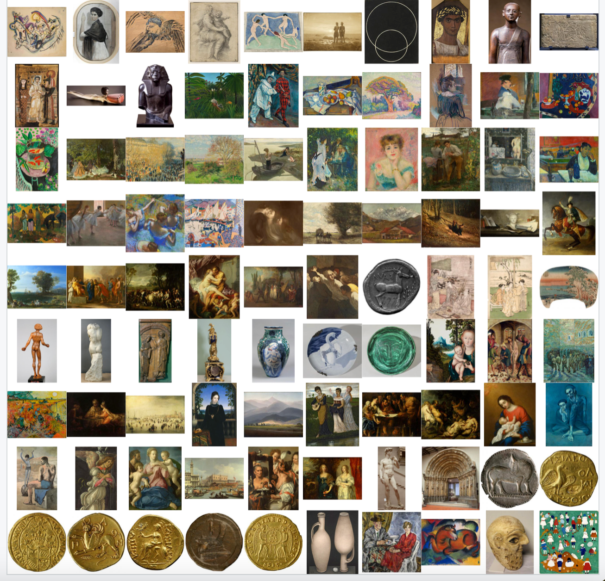

library(tidyverse)Warning: package 'ggplot2' was built under R version 4.5.2Warning: package 'readr' was built under R version 4.5.2library(jsonlite)
library(imager)
library(httr)library(tidyverse)Warning: package 'ggplot2' was built under R version 4.5.2Warning: package 'readr' was built under R version 4.5.2library(jsonlite)
library(imager)
library(httr)Формат JSON (JavaScript Object Notation) предназначен для представления структурированных данных. JSON имеет шесть основных типов данных. Четыре из них - скаляры:
null, который играет ту же роль, что и NA в R. Он представляет собой отсутствие данных;Inf, -Inf или NaN;TRUE и FALSE в R, но использует строчные буквы true и false.Строки, числа и булевы значения в JSON очень похожи на символьные, числовые и логические векторы в R. Основное отличие заключается в том, что скаляры JSON могут представлять только одно значение. Для представления нескольких значений необходимо использовать один из двух оставшихся типов: массивы и объекты.
И массивы, и объекты похожи на списки в R, разница заключается в том, именованы они или нет. Массив подобен безымянному списку и записывается через []. Например, [1, 2, 3] - это массив, содержащий 3 числа, а [null, 1, "string", false] - массив, содержащий ноль, число, строку и булево значение.
Объект подобен именованному списку и записывается через {}. Имена (ключи в терминологии JSON) являются строками, поэтому должны быть заключены в кавычки. Например, {"x": 1, "y": 2} - это объект, который сопоставляет x с 1, а y – с 2.
Загрузим небольшой файл TBBT.json, хранящий данные о сериале “Теория большого взрыва” (источник). Скачать лучше из репозитория курса ссылка.
path <- "https://raw.githubusercontent.com/locusclassicus/text_analysis_2024/refs/heads/main/files/TBBT.json"
tbbt <- read_json(path)Функция read_json() вернула нам список со следующими элементами:
summary(tbbt) Length Class Mode
name 1 -none- character
season_count 1 -none- character
episodes_count_total 1 -none- character
episodes_count_per_season 12 -none- list
casting 11 -none- list
episode_list 280 -none- list
references 1 -none- list Выборочно преобразуем список в тиббл, используя функцию pluck() из пакета {purrr}.
episodes_count <- tibble(
season = tbbt |>
pluck("episodes_count_per_season") |>
names(),
n = tbbt |>
pluck("episodes_count_per_season") |>
as.integer()
)
episodes_count |>
print()# A tibble: 12 × 2
season n
<chr> <int>
1 S01 17
2 S02 23
3 S03 23
4 S04 24
5 S05 24
6 S06 24
7 S07 24
8 S08 24
9 S09 24
10 S10 24
11 S11 24
12 S12 25tbbt |>
pluck("casting") |>
map_dfr(as_tibble) |>
print()# A tibble: 11 × 3
character_name actor_name first_appearance
<chr> <chr> <chr>
1 Sheldon Cooper Jim Parsons S01E01
2 Leonard Hofstadter Johnny Galecki S01E01
3 Penny Kaley Cuoco S01E01
4 Raj Kooththirapll Kunal Nayyar S01E01
5 Howard Wolowitz Simon Helberg S01E01
6 Bernadette Rostenkowski Melissa Rauch S03E05
7 Amy Farrah Fowler Mayim Bialik S03E23
8 Stuart Bloom Kevin Sussman <NA>
9 Wil Wheaton Wil Wheaton <NA>
10 Barry Kripke John Ross Bowie <NA>
11 Zack <NA> <NA> Еще один способ.
tibble(
episode_id = map_chr(tbbt$episode_list, pluck, "episode_id"),
title = map_chr(tbbt$episode_list, pluck, "title")
) |>
print()# A tibble: 280 × 2
episode_id title
<chr> <chr>
1 S01E01 Pilot
2 S01E02 The Big Bran Hypothesis
3 S01E03 The Fuzzy Boots Corollary
4 S01E04 The Luminous Fish Effect
5 S01E05 The Hamburger Postulate
6 S01E06 The Middle-Earth Paradigm
7 S01E07 The Dumpling Paradox
8 S01E08 The Grasshopper Experiment
9 S01E09 The Cooper-Hofstadter Polarization
10 S01E10 The Loobenfeld Decay
# ℹ 270 more rows
JSON – популярный формат для публикации открытых данных. В таком виде часто публикуют данные органы государственной власти, культурные и некоммерческие организации и др. Например, Пушкинский музей.
Взглянем на датасет “Шедевры из коллекции музея”. JSON можно прочитать напрямую из Сети.
doc <- read_json("https://pushkinmuseum.art/json/masterpieces.json")Датасет содержит информацию о 97 единицах хранения.
names(doc) [1] "3687" "3675" "3706" "3708" "3713" "3716" "4005" "4011" "4014"
[10] "4023" "4030" "4131" "4147" "4149" "4161" "4163" "4178" "4180"
[19] "4191" "4193" "4198" "4209" "4244" "4255" "4260" "4262" "4266"
[28] "4291" "4325" "4338" "4350" "4421" "4450" "4518" "4543" "4641"
[37] "4711" "4724" "4767" "7563" "4782" "4783" "4788" "4844" "4906"
[46] "4932" "4936" "4941" "4949" "4950" "5238" "5239" "5297" "5347"
[55] "5591" "5798" "5910" "5913" "5992" "6187" "6226" "6564" "6584"
[64] "6586" "6629" "6632" "6886" "7034" "7151" "7457" "7468" "7564"
[73] "7565" "7566" "7567" "7568" "7569" "7570" "9464" "9415" "9046"
[82] "10253" "10284" "10266" "10277" "10282" "10278" "10279" "10280" "10281"
[91] "10285" "10286" "10287" "10288" "10289" "10290" "10291"Для каждого предмета дано подробное описание.
summary(doc[[1]]) Length Class Mode
path 1 -none- character
m_parent_id 1 -none- character
year 1 -none- numeric
get_year 1 -none- character
inv_num 1 -none- character
type 2 -none- list
country 2 -none- list
period 2 -none- list
paint_school 1 -none- character
graphics_type 1 -none- character
department 1 -none- character
masterpiece 1 -none- character
show_in_hall 1 -none- character
show_in_collection 1 -none- numeric
name 2 -none- list
namecom 2 -none- list
size 2 -none- list
text 2 -none- list
annotation 2 -none- list
litra 2 -none- list
restor 2 -none- list
audioguide 2 -none- list
videoguide 2 -none- list
link 2 -none- list
linktext 2 -none- list
producein 2 -none- list
material 2 -none- list
from 2 -none- list
matvos 2 -none- list
sizevos 2 -none- list
prodcast 2 -none- list
searcha 2 -none- list
seakeys 2 -none- list
hall 1 -none- character
building 1 -none- character
gallery 1 -none- list
authors 1 -none- character
collectors 1 -none- list
cast 1 -none- character
shop 1 -none- characterЗаберем только то, что нам интересно.
masterpieces <- tibble(
name = map_chr(doc, pluck, "name", "ru"),
#get_year = map_chr(doc, pluck, "get_year"),
year = map_int(doc, pluck, "year"),
period = map_chr(doc, pluck, "period", "name", "ru"),
country = map_chr(doc, pluck, "country", "ru"),
gallery = paste0("https://pushkinmuseum.art", map_chr(doc, pluck, "gallery", 1, 1)))Библиотека imager позволяет работать с изображениями из датасета. Вот так мы могли бы забрать одно из них.
load.image(masterpieces$gallery[1]) |>
plot()
В пакете imager есть функция map_il(), которая похожа на свою родню из {purrr}, но возвращает список изображений.
img_gallery <- map_il(masterpieces$gallery, load.image)Функция walk() из пакета purrr – это аналог map() для тех случаев, когда нас интересует только вывод, т.е.не надо ничего сохранять в окружение.
par(mfrow = c(10, 10), mar = rep(0,4))
walk(img_gallery, plot, axes = FALSE)
Мы заберем данные о нобелевских лауреатах по литературе. В данном случае API не требует ключа авторизации.
# Базовый URL API Нобелевской премии
base_url <- "https://api.nobelprize.org/2.1/laureates"# Параметры запроса (фильтрация и ограничение результатов)
query_params <- list(
#nobelPrizeCategory = "lit", # Фильтр по категории
limit = 1100 # Ограничение количества результатов
)Другие категории:
# Выполнение GET-запроса
response <- GET(url = base_url, query = query_params)Функция content() берет сырой ответ от API и возвращает готовые к анализу данные.
nobel_data <- content(response, "text")laureates_data <- fromJSON(nobel_data) Нам осталось преобразовать данные в таблицу.
laureates_tbl <- laureates_data |>
pluck("laureates") Не все столбцы в этой таблице представляют собой вектор, это можно проверить.
tibble(name = map_chr(laureates_tbl, class) |>
names(),
type = map_chr(laureates_tbl, class) |>
as.character()
)list_cols <- laureates_tbl |>
select_if(is.list) |>
names()
list_cols [1] "knownName" "givenName" "familyName"
[4] "fullName" "birth" "wikipedia"
[7] "wikidata" "sameAs" "links"
[10] "nobelPrizes" "death" "orgName"
[13] "founded" "penNameOf" "foundedCountry"
[16] "foundedCountryNow" "foundedContinent" Теперь все распакуем. Заметьте, как увеличилось количество столбцов.
laureates_unnested <- laureates_tbl |>
unnest_wider(all_of(list_cols), names_sep = "_")
list_cols <- laureates_unnested |>
select_if(is.list) |>
names()Уберем все столбцы, которые содержат информацию на шведском и норвежском.
laureates_en <- laureates_unnested |>
select(-ends_with("_se"), -ends_with("_no"))
laureates_enСнова проделаем фокус с “распаковкой” целой серии столбцов.
list_cols <- laureates_en |>
select_if(is.list) |>
names()
list_cols [1] "birth_place" "links_rel"
[3] "links_href" "links_action"
[5] "links_types" "links_title"
[7] "links_class" "nobelPrizes_awardYear"
[9] "nobelPrizes_category" "nobelPrizes_categoryFullName"
[11] "nobelPrizes_sortOrder" "nobelPrizes_portion"
[13] "nobelPrizes_dateAwarded" "nobelPrizes_prizeStatus"
[15] "nobelPrizes_motivation" "nobelPrizes_prizeAmount"
[17] "nobelPrizes_prizeAmountAdjusted" "nobelPrizes_affiliations"
[19] "nobelPrizes_links" "nobelPrizes_residences"
[21] "nobelPrizes_topMotivation" "death_place"
[23] "founded_place" laureates_en_unnested <- laureates_en |>
unnest_wider(all_of(list_cols), names_sep = "_") |>
select(-contains("links"))Уберем лишние столбцы.
laureates_en_unnested |>
colnames() [1] "id" "knownName_en"
[3] "givenName_en" "familyName_en"
[5] "fullName_en" "fileName"
[7] "gender" "birth_date"
[9] "birth_place_city" "birth_place_country"
[11] "birth_place_cityNow" "birth_place_countryNow"
[13] "birth_place_continent" "birth_place_locationString"
[15] "wikipedia_slug" "wikipedia_english"
[17] "wikidata_id" "wikidata_url"
[19] "sameAs_1" "sameAs_2"
[21] "nobelPrizes_awardYear_1" "nobelPrizes_awardYear_2"
[23] "nobelPrizes_awardYear_3" "nobelPrizes_category_en"
[25] "nobelPrizes_category_no" "nobelPrizes_category_se"
[27] "nobelPrizes_categoryFullName_en" "nobelPrizes_categoryFullName_no"
[29] "nobelPrizes_categoryFullName_se" "nobelPrizes_sortOrder_1"
[31] "nobelPrizes_sortOrder_2" "nobelPrizes_sortOrder_3"
[33] "nobelPrizes_portion_1" "nobelPrizes_portion_2"
[35] "nobelPrizes_portion_3" "nobelPrizes_dateAwarded_1"
[37] "nobelPrizes_dateAwarded_2" "nobelPrizes_dateAwarded_3"
[39] "nobelPrizes_prizeStatus_1" "nobelPrizes_prizeStatus_2"
[41] "nobelPrizes_prizeStatus_3" "nobelPrizes_motivation_en"
[43] "nobelPrizes_motivation_se" "nobelPrizes_motivation_no"
[45] "nobelPrizes_prizeAmount_1" "nobelPrizes_prizeAmount_2"
[47] "nobelPrizes_prizeAmount_3" "nobelPrizes_prizeAmountAdjusted_1"
[49] "nobelPrizes_prizeAmountAdjusted_2" "nobelPrizes_prizeAmountAdjusted_3"
[51] "nobelPrizes_affiliations_1" "nobelPrizes_affiliations_2"
[53] "nobelPrizes_residences_1" "nobelPrizes_topMotivation_en"
[55] "nobelPrizes_topMotivation_se" "death_date"
[57] "death_place_city" "death_place_country"
[59] "death_place_cityNow" "death_place_countryNow"
[61] "death_place_continent" "death_place_locationString"
[63] "orgName_en" "acronym"
[65] "founded_date" "founded_place_city"
[67] "founded_place_country" "founded_place_cityNow"
[69] "founded_place_countryNow" "founded_place_continent"
[71] "founded_place_locationString" "nativeName"
[73] "penName" "penNameOf_fullName"
[75] "foundedCountry_en" "foundedCountryNow_en"
[77] "foundedContinent_en" list_cols <- laureates_en_unnested |>
select_if(is.list) |>
names()
list_cols [1] "birth_place_city" "birth_place_country"
[3] "birth_place_cityNow" "birth_place_countryNow"
[5] "birth_place_continent" "birth_place_locationString"
[7] "nobelPrizes_category_en" "nobelPrizes_category_no"
[9] "nobelPrizes_category_se" "nobelPrizes_categoryFullName_en"
[11] "nobelPrizes_categoryFullName_no" "nobelPrizes_categoryFullName_se"
[13] "nobelPrizes_motivation_en" "nobelPrizes_motivation_se"
[15] "nobelPrizes_motivation_no" "nobelPrizes_affiliations_1"
[17] "nobelPrizes_affiliations_2" "nobelPrizes_residences_1"
[19] "death_place_city" "death_place_country"
[21] "death_place_cityNow" "death_place_countryNow"
[23] "death_place_continent" "death_place_locationString"
[25] "founded_place_city" "founded_place_country"
[27] "founded_place_cityNow" "founded_place_countryNow"
[29] "founded_place_continent" "founded_place_locationString" Некоторые из этих столбцов сразу уберем, другие распакуем.
laureates_en_tidy <- laureates_en_unnested |>
select(-contains("_se"), -contains("_no"), -contains("locationString")) |>
unnest_wider(where(is.list), names_sep = "_") |>
# удаляю столбцы на свое усмотрение
select(-contains("wikipedia"), -contains("_se"), -contains("_no"),
-contains("longitude"), -contains("latitude"), -contains("sameAs"),
-contains("wikidata"), -contains("portion"), -contains("Amount"),
-contains("locationString"), -givenName_en, -fullName_en,
-familyName_en, -contains("city"), -contains("sortOrder"),
-contains("continent"), -contains("nativeName"), -contains("penName")
)laureates_en_tidy |>
colnames() [1] "id"
[2] "knownName_en"
[3] "fileName"
[4] "gender"
[5] "birth_date"
[6] "birth_place_country_en"
[7] "birth_place_countryNow_en"
[8] "nobelPrizes_awardYear_1"
[9] "nobelPrizes_awardYear_2"
[10] "nobelPrizes_awardYear_3"
[11] "nobelPrizes_category_en_1"
[12] "nobelPrizes_category_en_2"
[13] "nobelPrizes_category_en_3"
[14] "nobelPrizes_categoryFullName_en_1"
[15] "nobelPrizes_categoryFullName_en_2"
[16] "nobelPrizes_categoryFullName_en_3"
[17] "nobelPrizes_dateAwarded_1"
[18] "nobelPrizes_dateAwarded_2"
[19] "nobelPrizes_dateAwarded_3"
[20] "nobelPrizes_prizeStatus_1"
[21] "nobelPrizes_prizeStatus_2"
[22] "nobelPrizes_prizeStatus_3"
[23] "nobelPrizes_motivation_en_1"
[24] "nobelPrizes_motivation_en_2"
[25] "nobelPrizes_motivation_en_3"
[26] "nobelPrizes_affiliations_1_name"
[27] "nobelPrizes_affiliations_1_nameNow"
[28] "nobelPrizes_affiliations_1_country"
[29] "nobelPrizes_affiliations_1_countryNow"
[30] "nobelPrizes_affiliations_2_name"
[31] "nobelPrizes_affiliations_2_nameNow"
[32] "nobelPrizes_affiliations_2_country"
[33] "nobelPrizes_affiliations_2_countryNow"
[34] "nobelPrizes_residences_1_country"
[35] "nobelPrizes_residences_1_countryNow"
[36] "nobelPrizes_topMotivation_en"
[37] "death_date"
[38] "death_place_country_en"
[39] "death_place_countryNow_en"
[40] "orgName_en"
[41] "acronym"
[42] "founded_date"
[43] "founded_place_country_en"
[44] "founded_place_countryNow_en"
[45] "foundedCountry_en"
[46] "foundedCountryNow_en" В оставшихся данных нарушен принцип опрятного хранения: если на одного человека приходится несколько премий, они хранятся как отдельные столбцы, а не наблюдения. Это можно попробовать исправить (или же просто запросить данные, организованные по премиям, а не по людям – см. документацию).
laur_prize2 <- laureates_en_tidy |>
filter(!is.na(nobelPrizes_awardYear_2) & is.na(nobelPrizes_awardYear_3))
laur_prize3 <- laureates_en_tidy |>
filter(!is.na(nobelPrizes_awardYear_2) & !is.na(nobelPrizes_awardYear_3))С тремя премиями (1917, 1944, 1963) – только Красный Крест. Среди обладателей двух премий – некто refugees (1954 и 1981), за этим стоит Служба Верховного комиссара ООН по делам беженцев. Для остальных пока для простоты возьмем только первую премию.
laureates_final <- laureates_en_tidy |>
filter(is.na(nobelPrizes_awardYear_3)) |>
select(-contains("_2"), -contains("_3"), -fileName, -acronym) |>
select(-contains("countryNow"), -contains("cityNow"), -contains("nameNow"),
-contains("residences"), -contains("topMotivation"), -contains("penName"))Дальше там надо еще много чистить, но чтобы немного ускорить:
col_names_old <- colnames(laureates_final)
col_names_old [1] "id" "knownName_en"
[3] "gender" "birth_date"
[5] "birth_place_country_en" "nobelPrizes_awardYear_1"
[7] "nobelPrizes_category_en_1" "nobelPrizes_categoryFullName_en_1"
[9] "nobelPrizes_dateAwarded_1" "nobelPrizes_prizeStatus_1"
[11] "nobelPrizes_motivation_en_1" "nobelPrizes_affiliations_1_name"
[13] "nobelPrizes_affiliations_1_country" "death_date"
[15] "death_place_country_en" "orgName_en"
[17] "founded_date" "founded_place_country_en"
[19] "foundedCountry_en" col_names_new <- str_remove_all(col_names_old, "_en") |>
str_remove_all("_1") |>
str_remove_all("nobelPrizes_")
colnames(laureates_final) <- col_names_newlaureates_2025 <- laureates_final |>
mutate(awardYear = as.numeric(awardYear)) |>
filter(awardYear == 2025)
laureates_2025 |>
print()# A tibble: 11 × 19
id knownName gender birth_date birth_place_country awardYear category
<chr> <chr> <chr> <chr> <chr> <dbl> <chr>
1 1048 Fred Ramsdell male 1960-12-04 USA 2025 Physiol…
2 1050 John Clarke male 1942-00-00 United Kingdom 2025 Physics
3 1052 John M. Marti… male 1958-00-00 <NA> 2025 Physics
4 1056 László Kraszn… male 1954-01-05 Hungary 2025 Literat…
5 1057 Maria Corina … female 1967-00-00 Venezuela 2025 Peace
6 1047 Mary E. Brunk… female 1961-00-00 <NA> 2025 Physiol…
7 1051 Michel H. Dev… male 1953-00-00 France 2025 Physics
8 1055 Omar M. Yaghi male 1965-02-09 Jordan 2025 Chemist…
9 1054 Richard Robson male 1937-06-04 United Kingdom 2025 Chemist…
10 1049 Shimon Sakagu… male 1951-01-19 Japan 2025 Physiol…
11 1053 Susumu Kitaga… male 1951-07-04 Japan 2025 Chemist…
# ℹ 12 more variables: categoryFullName <chr>, dateAwarded <chr>,
# prizeStatus <chr>, motivation <chr>, affiliations_name <list<df[,3]>>,
# affiliations_country <list<df[,3]>>, death_date <chr>,
# death_place_country <chr>, orgName <chr>, founded_date <chr>,
# founded_place_country <chr>, foundedCountry <chr>В качестве упражнения посчитайте статистику слов в различных номинациях за все годы и визуализируйте результат.
Пример исследования, выполненного по итогам этого курса, можно посмотреть по ссылке.
Подробные инструкции для разработчиков. Значение maxResults не может превышать 40 за один запрос, в день не более 1000.
search_google_books <- function(query, max_results = 15, start_index = 0) {
base_url <- "https://www.googleapis.com/books/v1/volumes"
# Ограничиваем max_results 40
if (max_results > 40) {
warning("max_results не может быть больше 40. Установлено 40.")
max_results <- 40
}
full_url <- paste0(
base_url,
"?q=", URLencode(query),
"&maxResults=", max_results,
"&startIndex=", start_index,
"&printType=books"
)
response <- GET(full_url)
if (status_code(response) != 200) {
stop("Ошибка при запросе к API Google Books")
}
content <- content(response, "text", encoding = "UTF-8")
data <- fromJSON(content)
return(data)
}Попробуем в действии.
res <- search_google_books('plato')# Извлекаем метаданные
plato_data <- res$items$volumeInfo |>
mutate(authors = map_chr(authors, ~paste(.x, collapse = ", "))) |>
select(-industryIdentifiers, -readingModes, -printType, -maturityRating, -allowAnonLogging, -contentVersion, -panelizationSummary) |>
unnest_wider(imageLinks, names_sep = "_")
plato_data |>
print()# A tibble: 15 × 16
title authors publisher publishedDate pageCount categories
<chr> <chr> <chr> <chr> <int> <list>
1 PLATO Harold… Educatio… 1980 120 <chr [1]>
2 Plato Julia … Sterling… 2009 192 <chr [1]>
3 Plato George… <NA> 1867 656 <chr [1]>
4 Plato N. Jay… Atlantic… 1999 116 <NULL>
5 Plato on Punishment Mary M… Univ of … 1985-01-01 292 <chr [1]>
6 Plato's Theory of Art Rupert… Psycholo… 1953 336 <chr [1]>
7 The Theaetetus of Plato Myles … Hackett … 1990-01-01 376 <chr [1]>
8 Plato and the Foundatio… Hans J… SUNY Pre… 1990-01-01 354 <chr [1]>
9 Plato's Republic, Books… Plato Agora Pu… 2001 414 <chr [1]>
10 Plato's Defence of Poet… Julius… SUNY Pre… 1984-01-01 280 <chr [1]>
11 A History of Greek Phil… W. K. … Cambridg… 1986-04-24 626 <chr [1]>
12 Plato's Republic Platón <NA> 1894 532 <NULL>
13 Plato on Knowledge and … Nichol… Hackett … 1976-01-01 276 <chr [1]>
14 Plato's Craft of Justice Richar… SUNY Pre… 1996-01-01 288 <chr [1]>
15 Self-Knowledge in Plato… Charle… Penn Sta… 2010-11-01 337 <chr [1]>
# ℹ 10 more variables: imageLinks_smallThumbnail <chr>,
# imageLinks_thumbnail <chr>, language <chr>, previewLink <chr>,
# infoLink <chr>, canonicalVolumeLink <chr>, description <chr>,
# subtitle <chr>, averageRating <int>, ratingsCount <int>Создадим галерею обложек.
library(magick)
catch_cover <- function(url) {
img <- image_read(url) |>
image_border("white", "10x10") # Добавляем рамку
return(img)
}
plato_gallery <- map(plato_data$imageLinks_smallThumbnail, catch_cover)
# Функция для создания сетки обложек
create_cover_grid <- function(images, cols = 4, target_width = 200) {
if (length(images) == 0) return(NULL)
# Ресайзим все изображения к одинаковой ширине
images_resized <- map(images, ~ image_scale(.x, paste0(target_width, "x")))
# Вычисляем количество строк
rows <- ceiling(length(images_resized) / cols)
# Создаем строки
gallery_rows <- map(1:rows, function(row) {
start_idx <- (row - 1) * cols + 1
end_idx <- min(row * cols, length(images_resized))
row_images <- images_resized[start_idx:end_idx]
# Если в последней строке меньше изображений, добавляем пустые места
if (length(row_images) < cols) {
empty_count <- cols - length(row_images)
empty_images <- map(1:empty_count, ~ image_blank(target_width, 300, "white"))
row_images <- c(row_images, empty_images)
}
# Объединяем изображения в строку
image_append(do.call(c, row_images), stack = FALSE)
})
# Объединяем все строки
image_append(do.call(c, gallery_rows), stack = TRUE)
}# Создаем и отображаем галерею
gallery <- create_cover_grid(plato_gallery, cols = 5)
print(gallery)При работе важно учитывать лимиты API. Множественные запросы отправляем, например, так (но можно придумать и другие решения).
start_idx <- seq(0, 200, 10)
google_data <- map(start_idx, ~search_google_books("plato", start_index = .x))Извлекаем данные из списка.
google_tbl <- map_dfr(1:length(google_data), ~pluck(google_data, .x, 3, "volumeInfo"))И дальше работаем с ними как обычно: приводим к опрятному виду, обобщаем, строим разведывательные графики.
google_tbl |>
as_tibble() |>
print()# A tibble: 210 × 22
title authors publisher publishedDate industryIdentifiers readingModes$text
<chr> <list> <chr> <chr> <list> <lgl>
1 PLATO <chr> Educatio… 1980 <df [2 × 2]> TRUE
2 Plato <chr> Sterling… 2009 <df [2 × 2]> FALSE
3 Plato <chr> <NA> 1867 <df [1 × 2]> FALSE
4 Plato <chr> Atlantic… 1999 <df [2 × 2]> FALSE
5 Plato … <chr> Univ of … 1985-01-01 <df [2 × 2]> FALSE
6 Plato'… <chr> Psycholo… 1953 <df [2 × 2]> TRUE
7 The Th… <chr> Hackett … 1990-01-01 <df [2 × 2]> FALSE
8 Plato … <chr> SUNY Pre… 1990-01-01 <df [2 × 2]> FALSE
9 Plato'… <chr> Agora Pu… 2001 <df [2 × 2]> TRUE
10 Plato'… <chr> SUNY Pre… 1984-01-01 <df [2 × 2]> TRUE
# ℹ 200 more rows
# ℹ 17 more variables: readingModes$image <lgl>, pageCount <int>,
# printType <chr>, categories <list>, maturityRating <chr>,
# allowAnonLogging <lgl>, contentVersion <chr>, panelizationSummary <df[,2]>,
# imageLinks <df[,2]>, language <chr>, previewLink <chr>, infoLink <chr>,
# canonicalVolumeLink <chr>, description <chr>, subtitle <chr>,
# averageRating <int>, ratingsCount <int>И дальше работаем с ними как обычно, приводим к опрятному виду т.д.
Для этого задания необходимо исследовать датасет Министерства Культуры о репертуарах российских театров (источник).
Это ПОЛОВИНА задания на оценку 0-10, т.е. максимальная оценка за него = 5 баллов. Вторая половина будет следующий раз (результаты суммируются). Все подробности в GitHub Classroom по ссылке. Дедлайн 19 октября 21-00 мск.